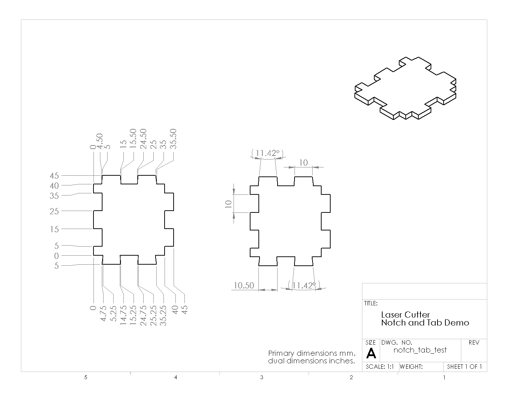
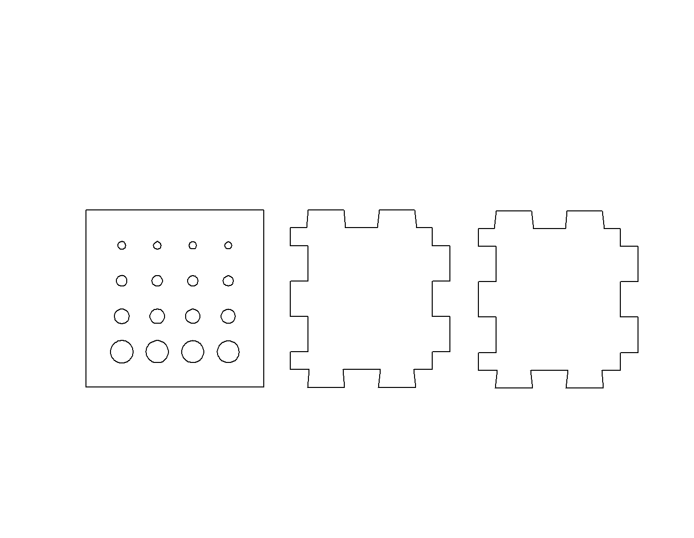

Note: this is a new exercise, please provide feedback on errors and clarity.
Understand basic design considerations for laser-cut acrylic parts. Learn to operate the laser cutter, measure features, and choose design elements compatible with laser-cutting in acrylic.
Laser cutters are extremely useful tools for cutting complex 2D forms. Their best feature for our coursework is the speed with which an idea can be tested: it is possible to conceive of a part, create a 2D drawing, output a DXF, and cut material to make a functional part within minutes.
Laser cutters are intrinsically two-dimensional tools: a focused beam of infrared laser light (e.g. invisible to the human eye) moves on a XY gantry under computer control to trace out curves and lines. The beam is turned on and off to start and end lines during cutting. It may also be used in a raster engraving mode in which it sweeps an area while modulating the beam power very quickly to vary the cut and create an image on the surface.
The fundamental cutting process is melting or burning from the heat resulting from absorbing the energy of the light. An air jet blows downwards into the cut area to help move melted material out of the cut before it resolidifies. The cutter bed can be moved up or down prior to cutting to place the top plane of the flat material at the focal point of the laser.
The cut file specifies the centerline for the laser path, but the width of the kerf means that material will be cut on either side of the beam path. So an inside edge such as a hole will have a slightly larger diameter than drawn and an outside edge will have a slightly smaller width or diameter than drawn. Any hole will be slightly conical since the cuts are slightly tapered top to bottom.
The idea of engineering tolerance has several different meaning in practice related to choosing design parameters which can accommodate physical variations. For mass-produced parts, the variation can include dimensional imprecision from part to part. For parts subject to environmental changes, the variation might be changes in dimension or material properties resulting from thermal or humidity changes. A robust design will include features and parameter choices which can accommodate these variations to an acceptable level.
The laser-cutting process has several sources of variation: the cutter itself changes calibration as the optics are dirtied and the laser ages, the focal depth can be miscalibrated from pass to pass, the material does not always have an exact thickness, and the XY drive mechanism has backlash and positioning error.
Handwork. If parts are always cut slightly undersize, they can be hand-filed and trimmed to fit. This is labor-intensive and consistency is difficult, although for a very simple part sometimes the fastest solution.
Iterative Adjustment. The part design can be adapted to the current process parameters by measuring a cut part and adjusting the design file. This can be time-consuming to iterate and is not necessarily stable in the face of day-to-day variations. It can however lead to very precise parts, cut within the intrinsic mechanical precision of the cutter.
Tolerant Design. The part can be designed to allow process variation and still retain function. This eliminates handwork at the cost of more careful design. However, it may also require reduced part precision. Techniques include: using tapered features, using fasteners, adding extra alignment features, carefully choosing structural topology.
For this exercise, we are providing sample laser-cuttable parts to demonstrate a few techniques for building reliable structures out of acrylic. These are intended as starting points for your own designs. The sources for these designs can be found in the physcomp-solidworks git repository on github.
The Physical Computing Lab stocks several sizes of screws: M3, 2-56, 8-32, and 1/4-20. We will use these as references for tolerancing. Screws have a nominal specified diameter, but all screws are slightly undersized to guarantee a fit into a threaded hole. The nominal diameters are as follows:
| Thread | Nominal Diameter | Close Fit | Free Fit |
|---|---|---|---|
| 2-56 | 0.086 inches | 0.089 inches | 0.096 inches |
| 8-32 | 0.164 inches | 0.1695 inches | 0.177 inches |
| 1/4-20 | 0.250 inches | 0.257 inches | 0.266 inches |
| M3 | 3.0 mm | 3.15 mm | 3.30 mm |
More of these parameters can be found here or here.
For this experiment, we will focus on cutting smaller holes to see at what point we can achieve an interference fit. Acrylic is relatively brittle and not very conducive to tapping, but for light-duty connections self-tapping with a normal screw can sometimes be enough to secure a threaded fastener.
If you want to create a box from laser-cut parts, a handy tool is the online BoxMaker tool. In the examples below is an automatically generated design for a box with the following parameters: 50x50x50 mm dimensions, 3 mm material thickness, 0.1 mm cut width. Note that the BoxMaker tool leaves a lot of extra space between the panels which represents wasted material; it is a good idea to move the parts closer or rearrangement them to fit your stock.
Some more elaborate examples of slot and tab structures can be found in the physcomp-solidworks repository; see wedge_examples in particular. Also, some examples of joining plates for use with aluminum extrusion can be found in spokes_example.

